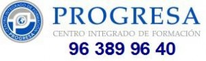

Ciclos Fp
Ciclos FP
Homologado por:

- Contacta con nosotros
- 963 899 640
progresa@cieep.com - Escríbenos
- Conoce nuestro equipo
- Cómo llegar
PROGRESA, centro homologado en Valencia. Ofertamos diferentes ciclos formativos de FP. ¡Infórmate!
La Oferta formativa de Formación Profesional en Progresa Formación responde a las necesidades de la sociedad y del mercado laboral, te permite:
Cualificarte en la profesión que elijas.
Acceder al empleo.
Participar de forma activa en la vida social, cultural y económica.
La Formación Profesional tiene una organización modular y sus contenidos además de ser teóricos y prácticos se ajustan a los diversos campos profesionales.
La Formación Profesional en Progresa Formación comprende las acciones formativas que capacitan para el desempeño cualificado de las diversas profesiones, favoreciendo el acceso al empleo, la participación activa en la vida social, cultural y económica, y la cohesión social.
En un sentido integrador incluye las enseñanzas propias de la Formación Profesional del sistema educativo y de la Formación Profesional para el Empleo, en ambos casos en la perspectiva de la adquisición y actualización permanente de las competencias profesionales.
definitiva, la Formación Profesional es una herramienta para que:
• Los ciudadanos mejoren sus posibilidades de proyección profesional y personal
• Las empresas aumenten su competitividad al disponer de unos recursos humanos cualificados